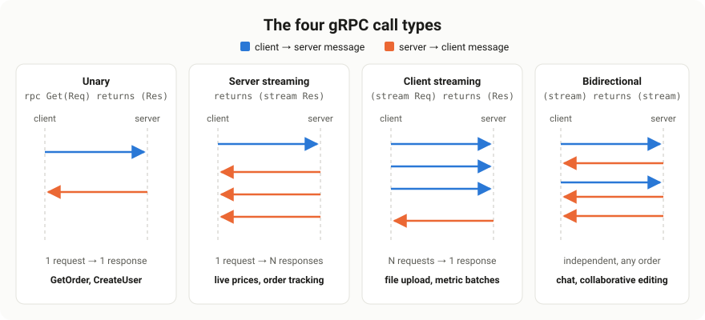
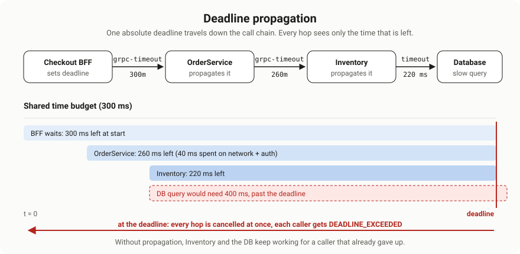
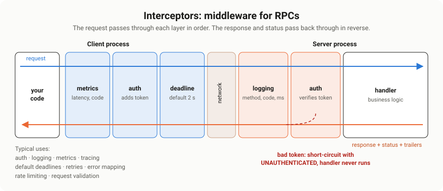

gRPC Practical Patterns & Streaming#
Scope: the working half of gRPC. All four call types with runnable code, flow control and backpressure, deadlines and cancellation with propagation, interceptors, the status code model and rich errors, retries, and the production patterns that keep streams healthy.
Source: extracted and reorganised from
0. md/DOCUMENTATIONS ...md(and its HTML twin) →GRAPHQL, gRPC… > gRPC(Overal, Docs, FAANG questions, Custom QA, 50 Q&A) andHandling Failures and Fault Mode > gRPC Failure handling. Gaps were filled from grpc.io and the gRPC proposals.Everything here was executed. The service in this document was built and run against @grpc/grpc-js 1.14.4 on Node.js 24.15.0, and 36 behavioural checks pass: the four call types, deadline propagation, cancellation, backpressure, interceptor ordering, rich errors, retries and message limits. Where behaviour differs from the common wisdom, the measured result is stated. Schema and encoding questions are covered in Protocol Buffers & gRPC Deep Dive.
0. What this document covers#
| Topic | One-line summary |
|---|---|
| Call types | Unary, server streaming, client streaming, bidirectional, with code for each |
| Flow control | write() and drain, and what a slow consumer really does |
| Deadlines | Absolute time budgets that propagate down the call chain |
| Cancellation | How a client giving up reaches every downstream service |
| Metadata | Headers and trailers, including binary values |
| Interceptors | Middleware on both sides: auth, logging, metrics, default deadlines |
| Errors | 17 status codes, choosing the right one, and rich machine-readable details |
| Retries | Service-config policies, which codes are safe, and how deadlines bound them |
| Production | Keepalive, load balancing, health checks, reflection, graceful shutdown, limits |
| Streaming patterns | Resumption, heartbeats, stream lifetime, fan-out, backpressure |
1. The example service#
Every snippet below comes from one small but complete service: an OrderService with all four RPC types plus a downstream InventoryService used to demonstrate deadline propagation.
demo/
proto/
demo/v1/order_service.proto # the contract
google/rpc/status.proto # minimal copies, for rich error details
google/rpc/error_details.proto
load.js # loads the .proto once
errors.js # rich errors + the handler guard
interceptors-server.js # auth + logging interceptors
server.js # the four handlers
client.js # interceptors, default deadlines, retriesnpm install @grpc/grpc-js @grpc/proto-loader protobufjs
node server.js1.1 The contract#
order_service.proto
syntax = "proto3";
package demo.v1;
import "google/protobuf/timestamp.proto";
// The four RPC shapes, on one realistic service.
service OrderService {
// Unary: one request, one response.
rpc GetOrder(GetOrderRequest) returns (Order);
// Server streaming: one request, a stream of status updates.
rpc WatchOrder(WatchOrderRequest) returns (stream OrderEvent);
// Client streaming: the client uploads many line items, gets one summary.
rpc UploadItems(stream LineItem) returns (UploadSummary);
// Bidirectional streaming: live support chat about an order.
rpc Chat(stream ChatMessage) returns (stream ChatMessage);
}
// A downstream dependency, used to show deadline propagation.
service InventoryService {
rpc CheckStock(CheckStockRequest) returns (CheckStockResponse);
}
enum OrderStatus {
ORDER_STATUS_UNSPECIFIED = 0;
ORDER_STATUS_PENDING = 1;
ORDER_STATUS_PAID = 2;
ORDER_STATUS_SHIPPED = 3;
ORDER_STATUS_DELIVERED = 4;
}
message GetOrderRequest {
string order_id = 1;
}
message Order {
string order_id = 1;
OrderStatus status = 2;
repeated LineItem items = 3;
int64 total_cents = 4;
bool in_stock = 5;
}
message WatchOrderRequest {
string order_id = 1;
}
message OrderEvent {
string order_id = 1;
OrderStatus status = 2;
google.protobuf.Timestamp at = 3;
}
message LineItem {
string sku = 1;
int32 quantity = 2;
int64 unit_price_cents = 3;
}
message UploadSummary {
int32 item_count = 1;
int64 total_cents = 2;
}
message ChatMessage {
string from = 1;
string text = 2;
}
message CheckStockRequest {
repeated string skus = 1;
}
message CheckStockResponse {
bool all_in_stock = 1;
}1.2 Loading it#
This service loads the .proto at runtime with @grpc/proto-loader, so there is no build step. The loader options matter more than they look: longs: String prevents silent precision loss on int64, and enums: String gives readable values.
load.js
// load.js — load the .proto files once, share them everywhere.
const path = require("node:path");
const grpc = require("@grpc/grpc-js");
const protoLoader = require("@grpc/proto-loader");
const protobuf = require("protobufjs");
const PROTO_DIR = path.join(__dirname, "proto");
const packageDefinition = protoLoader.loadSync("demo/v1/order_service.proto", {
includeDirs: [PROTO_DIR],
keepCase: false, // order_id -> orderId in JS
longs: String, // int64 -> string, so large numbers don't lose precision
enums: String, // enums as "ORDER_STATUS_PAID"
defaults: true, // unset fields come back as their zero values
oneofs: true,
});
const { demo } = grpc.loadPackageDefinition(packageDefinition);
// Rich error details (google.rpc.Status) are encoded with plain protobufjs.
const rpcRoot = new protobuf.Root();
rpcRoot.resolvePath = (_origin, target) =>
target.startsWith("google/protobuf/") ? target : path.join(PROTO_DIR, target);
rpcRoot.loadSync(["google/rpc/status.proto", "google/rpc/error_details.proto"]);
module.exports = {
grpc,
OrderService: demo.v1.OrderService,
InventoryService: demo.v1.InventoryService,
RpcStatus: rpcRoot.lookupType("google.rpc.Status"),
BadRequest: rpcRoot.lookupType("google.rpc.BadRequest"),
};2. The four call types#

| Type | Signature | Use when | Example |
|---|---|---|---|
| Unary | rpc M(Req) returns (Res) | One question, one answer | GetOrder, CreateUser |
| Server streaming | returns (stream Res) | One request, many results over time | Live order tracking, tailing logs |
| Client streaming | (stream Req) returns (Res) | Many inputs, one summary | Uploads, metric batches |
| Bidirectional | (stream Req) returns (stream Res) | Ongoing two-way conversation | Chat, collaborative editing |
Default to unary. Streaming adds real complexity: lifecycle, backpressure, resumption and partial failure. The notes put this well: bidirectional streaming is a bad idea for simple CRUD, and should be reserved for genuinely real-time needs.
2.1 The server#
server.js
// server.js — OrderService (all four RPC types) + a downstream InventoryService.
const { setTimeout: sleep } = require("node:timers/promises");
const { grpc, OrderService, InventoryService } = require("./load.js");
const { invalidArgument, guardHandlers } = require("./errors.js");
const { authInterceptor, loggingInterceptor } = require("./interceptors-server.js");
const ORDERS = new Map([
["ord_1", { orderId: "ord_1", status: "ORDER_STATUS_PAID",
items: [{ sku: "kb-01", quantity: 2, unitPriceCents: "4999" }], totalCents: "9998" }],
["ord_slow", { orderId: "ord_slow", status: "ORDER_STATUS_PENDING",
items: [{ sku: "slow-sku", quantity: 1, unitPriceCents: "100" }], totalCents: "100" }],
]);
// Resolves true when the stream can take more data, false if the call was cancelled.
// Awaiting 'drain' alone hangs forever when the client cancels mid-wait.
function waitWritable(call) {
if (call.cancelled) return Promise.resolve(false);
return new Promise((resolve) => {
const onDrain = () => { cleanup(); resolve(true); };
const onCancel = () => { cleanup(); resolve(false); };
const cleanup = () => { call.off("drain", onDrain); call.off("cancelled", onCancel); };
call.once("drain", onDrain);
call.once("cancelled", onCancel);
});
}
// ---------------------------------------------------------------- inventory (downstream)
const inventoryHandlers = {
async checkStock(call, callback) {
if (call.request.skus.some((s) => s.startsWith("slow"))) {
await sleep(500); // simulate a slow dependency
if (call.cancelled) return; // caller gave up: stop working, send nothing
}
callback(null, { allInStock: true });
},
};
// ---------------------------------------------------------------- orders
function orderHandlers(inventory) {
return {
// Unary
getOrder(call, callback) {
const { orderId } = call.request;
if (!orderId) {
return callback(invalidArgument("order_id is required",
[{ field: "order_id", description: "must not be empty" }]));
}
const order = ORDERS.get(orderId);
if (!order) {
return callback({ code: grpc.status.NOT_FOUND, details: `Order ${orderId} not found` });
}
// Pass our own deadline and cancellation down to the dependency.
inventory.checkStock(
{ skus: order.items.map((i) => i.sku) },
{ parent: call, deadline: call.getDeadline() },
(err, stock) => {
if (err) return callback(err); // DEADLINE_EXCEEDED, UNAVAILABLE... flow upward
callback(null, { ...order, inStock: stock.allInStock });
});
},
// Server streaming
async watchOrder(call) {
const { orderId } = call.request;
if (!ORDERS.has(orderId)) {
// Streams report errors by emitting them; grpc-js turns this into the final status.
// (call.destroy(err) would tear down the stream without ever sending a status.)
return call.emit("error", { code: grpc.status.NOT_FOUND, details: `Order ${orderId} not found` });
}
for (const status of ["ORDER_STATUS_PAID", "ORDER_STATUS_SHIPPED", "ORDER_STATUS_DELIVERED"]) {
if (call.cancelled) return; // client went away: stop producing
const now = Date.now();
const event = { orderId, status, at: { seconds: Math.floor(now / 1000), nanos: (now % 1000) * 1e6 } };
if (!call.write(event) && !(await waitWritable(call))) return; // backpressure, cancel-safe
await sleep(Number(call.metadata.get("x-demo-interval-ms")[0] ?? 50));
}
call.end(); // OK status after the last message
},
// Client streaming
uploadItems(call, callback) {
let itemCount = 0;
let totalCents = 0n; // int64 arrives as a string: use BigInt
let failed = false;
call.on("data", (item) => {
if (failed) return;
if (item.quantity <= 0) {
failed = true;
return callback(invalidArgument("invalid line item",
[{ field: `items[${itemCount}].quantity`, description: "must be positive" }]));
}
itemCount += 1;
totalCents += BigInt(item.unitPriceCents) * BigInt(item.quantity);
});
call.on("end", () => {
if (!failed) callback(null, { itemCount, totalCents: totalCents.toString() });
});
},
// Bidirectional streaming
chat(call) {
call.on("data", (msg) => {
call.write({ from: "support", text: `Got it: "${msg.text}"` });
});
call.on("end", () => call.end()); // client finished sending -> we finish too
},
};
}
// ---------------------------------------------------------------- bootstrap
async function startServers({ log = () => {}, logError = console.error, validTokens = ["secret-token"] } = {}) {
const bind = (server) => new Promise((resolve, reject) =>
server.bindAsync("127.0.0.1:0", grpc.ServerCredentials.createInsecure(),
(err, port) => (err ? reject(err) : resolve(port))));
const inventoryServer = new grpc.Server();
inventoryServer.addService(InventoryService.service, guardHandlers(inventoryHandlers, logError));
const inventoryPort = await bind(inventoryServer);
const inventory = new InventoryService(`127.0.0.1:${inventoryPort}`, grpc.credentials.createInsecure());
const orderServer = new grpc.Server({
interceptors: [loggingInterceptor(log), authInterceptor((t) => validTokens.includes(t))],
"grpc.max_receive_message_length": 1024 * 1024, // 1 MB instead of the 4 MB default
});
orderServer.addService(OrderService.service, guardHandlers(orderHandlers(inventory), logError));
const orderPort = await bind(orderServer);
return {
address: `127.0.0.1:${orderPort}`,
async stop() {
inventory.close();
await Promise.all([orderServer, inventoryServer].map((s) =>
new Promise((resolve) => s.tryShutdown(() => resolve()))));
},
};
}
module.exports = { startServers };
if (require.main === module) {
startServers({ log: console.log }).then(({ address }) => console.log(`OrderService on ${address}`));
}2.2 The client#
client.js
// client.js — a production-shaped client: interceptors, default deadlines, retries.
const { grpc, OrderService } = require("./load.js");
// Adds the bearer token to every outgoing call.
const authInterceptor = (getToken) => (options, nextCall) =>
new grpc.InterceptingCall(nextCall(options), {
start(metadata, listener, next) {
metadata.set("authorization", `Bearer ${getToken()}`);
next(metadata, listener);
},
});
// Gives every unary call a deadline unless the caller set one. Streams are left alone.
const defaultDeadlineInterceptor = (ms) => (options, nextCall) => {
const { requestStream, responseStream } = options.method_definition;
if (!options.deadline && !requestStream && !responseStream) {
options = { ...options, deadline: Date.now() + ms };
}
return nextCall(options);
};
// Records method, status and latency when each call finishes.
const metricsInterceptor = (record) => (options, nextCall) => {
const started = Date.now();
return new grpc.InterceptingCall(nextCall(options), {
start(metadata, listener, next) {
next(metadata, {
onReceiveStatus(status, nextStatus) {
record({ method: options.method_definition.path, code: grpc.status[status.code], ms: Date.now() - started });
nextStatus(status);
},
});
},
});
};
// Retries are a channel-level policy: only safe, idempotent methods, only transient codes.
const serviceConfig = {
loadBalancingConfig: [{ round_robin: {} }],
methodConfig: [{
name: [{ service: "demo.v1.OrderService", method: "GetOrder" }],
retryPolicy: {
maxAttempts: 4,
initialBackoff: "0.1s",
maxBackoff: "1s",
backoffMultiplier: 2,
retryableStatusCodes: ["UNAVAILABLE"],
},
}],
};
function createOrderClient(address, { getToken, record = () => {}, defaultDeadlineMs = 2000 } = {}) {
return new OrderService(address, grpc.credentials.createInsecure(), {
// Interceptors run outermost-first: metrics sees the final outcome, including retries.
interceptors: [
metricsInterceptor(record),
authInterceptor(getToken),
defaultDeadlineInterceptor(defaultDeadlineMs),
],
"grpc.enable_retries": 1,
"grpc.service_config": JSON.stringify(serviceConfig),
"grpc.keepalive_time_ms": 30_000,
"grpc.keepalive_timeout_ms": 10_000,
});
}
// async/await wrapper for unary calls.
const unary = (client, method, request, options = {}) =>
new Promise((resolve, reject) =>
client[method](request, new grpc.Metadata(), options,
(err, response) => (err ? reject(err) : resolve(response))));
module.exports = { createOrderClient, unary, serviceConfig };2.3 Unary#
The simplest shape, and the one to reach for first.
// Callback style, as generated.
client.getOrder({ orderId: "ord_1" }, (err, order) => {
if (err) return console.error(grpc.status[err.code], err.details);
console.log(order.status);
});
// Promise wrapper, from client.js.
const order = await unary(client, "getOrder", { orderId: "ord_1" });The notes ask whether async/await works with gRPC in Node: yes, but only by wrapping the callback in a promise, as unary() does. Other languages, such as Go and Java, offer blocking, async and future-based stubs directly.
Tested: int64 arrives as a string, enum as its name, and the downstream InventoryService call is made with the caller's deadline attached.
2.4 Server streaming#
The server writes many messages, then ends the stream. Three rules make it safe:
- Respect backpressure.
call.write()returningfalsemeans the buffer is full. - Stop when the client leaves. Check
call.cancelledeach iteration. - Report errors by emitting them, not by destroying the stream.
// Consuming it: a Node readable stream, so for-await works.
try {
for await (const event of client.watchOrder({ orderId: "ord_1" })) {
console.log(event.status);
}
} catch (err) {
// An error arrives as a throw out of the loop.
console.error(grpc.status[err.code], err.details);
}Gotcha found while testing this document. Reporting an error with
call.destroy({ code, details })tears the stream down without ever sending a gRPC status, so the client hangs until its deadline. grpc-js only converts an error into a status when you emit it:call.emit("error", { code, details }). TheguardHandlerswrapper inerrors.jsdoes this for you.
2.5 Client streaming#
The client writes many messages and half-closes; the server replies once.
const summary = await new Promise((resolve, reject) => {
const call = client.uploadItems((err, res) => (err ? reject(err) : resolve(res)));
for (const item of items) call.write(item);
call.end(); // half-close: "I'm done sending"
});Tested: 1,000 streamed items produced one summary, with the int64 total accumulated as a BigInt to avoid precision loss. A validation failure on the second item returned INVALID_ARGUMENT with a field path, and the server stopped accumulating.
The server can respond before the client finishes sending, which is how early validation failures work. A client that keeps writing after that gets a CANCELLED or write error.
2.6 Bidirectional streaming#
Both sides send independently on one stream. There is no request-response pairing unless you build one, for example by putting a correlation ID in the message.
const call = client.chat();
call.on("data", (msg) => console.log(`${msg.from}: ${msg.text}`));
call.on("end", () => console.log("server finished"));
call.write({ from: "alice", text: "where is my order?" });
call.write({ from: "alice", text: "thanks" });
call.end();Tested: messages interleaved correctly, and the half-close from the client led to a clean end from the server.
Design rules that prevent most bidi bugs:
- Decide who ends first. A common contract is: the client half-closes, then the server finishes.
- Carry a correlation ID if replies can arrive out of order.
- Keep per-stream state small; a stream pins memory on both sides for its whole life.
- Don't use bidi as a message queue. If you need durability, replay or fan-out to many consumers, use Kafka or RabbitMQ and keep gRPC for the request path.
3. Flow control and backpressure#
HTTP/2 has per-stream flow control, so a sender cannot overwhelm the network. What that means for your code is more subtle, and it was measured.
3.1 The server-side pattern#
call.write() returns false when the outgoing buffer is full. The usual advice is to wait for drain, but doing only that introduces a leak.
Gotcha found while testing this document. If the client cancels while the server is waiting on
drain, that event never fires: the handler is stuck forever, holding its closure and any resources. Measured: a handler parked onawait once(call, "drain")was still parked long after the client had cancelled. Wait for eitherdrainorcancelled:
function waitWritable(call) {
if (call.cancelled) return Promise.resolve(false);
return new Promise((resolve) => {
const onDrain = () => { cleanup(); resolve(true); };
const onCancel = () => { cleanup(); resolve(false); };
const cleanup = () => { call.off("drain", onDrain); call.off("cancelled", onCancel); };
call.once("drain", onDrain);
call.once("cancelled", onCancel);
});
}
// in the handler
if (!call.write(event) && !(await waitWritable(call))) return;Tested: streaming 20,000 one-kilobyte messages, write() returned false 1,250 times, every wait resumed on drain, and all 20,000 arrived in order. The server's own memory stayed flat at about 80 MB.
3.2 What a slow consumer actually does#
| Measurement | Result |
|---|---|
| Client paused for 3 seconds, server sending 1 KB messages | Server wrote ~180,000 messages, about 180 MB |
| Server memory during that time | Flat, around 80 MB |
| Client memory during that time | Grew from ~125 MB to ~347 MB |
Pausing a grpc-js client stream does not slow the sender. The data keeps arriving and buffers in the client's process. So:
- **The
write/drainpattern protects the server**, which is what it is for. - It does not protect a slow client. A consumer that can't keep up will grow its own heap until it dies.
- Other implementations differ. grpc-java exposes manual flow control, where the application requests messages explicitly, and grpc-go replenishes the receive window as the application reads. Don't assume Node's behaviour elsewhere, or the reverse.
- For genuinely fast producers, add application-level flow control: have the consumer request N more items over a bidirectional stream, the pattern used by reactive-streams style APIs.
3.3 Practical limits#
- Keep individual messages small; the default receive limit is 4 MB, and huge messages hurt latency and memory. Tested: a 2 MB request against a 1 MB limit failed with
RESOURCE_EXHAUSTED. - For large payloads, stream chunks of 32 KB to 128 KB rather than one giant message.
- Bound the number of concurrent streams per connection; the HTTP/2 default is often 100.
4. Deadlines and cancellation#
This is gRPC's best feature, and the notes are right to call its failure handling the strongest of the three API styles.
4.1 Timeout vs deadline#
- A timeout is a duration: "wait 5 seconds".
- A deadline is an absolute point in time: "be finished by 10:00:03.250".
gRPC works with deadlines. The client computes the remaining time and sends it as the grpc-timeout header, so every hop in the chain shares one budget instead of each adding its own five seconds.
// Both forms exist in grpc-js; the deadline is what travels.
client.getOrder(req, { deadline: Date.now() + 250 }, cb);
client.getOrder(req, { deadline: new Date("2026-09-15T10:00:03.250Z") }, cb);4.2 Propagation#

Propagation is not automatic in Node: pass the incoming call as parent, and its deadline along with it.
inventory.checkStock(
{ skus },
{ parent: call, deadline: call.getDeadline() }, // inherit budget + cancellation
(err, stock) => { ... });Tested end to end: a client deadline of 200 ms reached a downstream service two hops away within 2 ms of the original, every hop was cancelled at once when it expired, and the caller got DEADLINE_EXCEEDED.
4.3 Deadlines do not stop your code#
Tested: when the deadline expired, the downstream handler received a
cancelledevent, but its function kept running to completion and its callback was simply ignored.
A deadline frees the *caller*, not the *callee*. To actually stop work, check for cancellation:
async function checkStock(call, callback) {
await slowLookup();
if (call.cancelled) return; // nobody is waiting: stop, send nothing
callback(null, { allInStock: true });
}Check call.cancelled before expensive steps, and pass an abort signal into database and HTTP calls so they stop too.
4.4 Choosing deadlines#
- Every unary call gets a deadline. A call without one can hang forever. The client interceptor in
client.jsapplies a default, which is the cheapest way to guarantee it. - Base the value on observed latency, roughly the p99 plus headroom, not on a round number.
- Budget down the chain. If the edge allows 300 ms, an inner service should be given less, not more.
- Don't put a short default deadline on long-lived streams. The interceptor in
client.jsdeliberately skips streaming methods. Tested: a 50 ms default would have killed a healthy 180 ms stream; skipping streams let it complete. - Use keepalive and heartbeats for streams instead, covered in section 8.
4.5 Client-initiated cancellation#
const stream = client.watchOrder({ orderId: "ord_1" });
stream.on("data", (e) => { if (done(e)) stream.cancel(); });Tested: the client saw CANCELLED, and the server's loop observed call.cancelled and stopped producing. Cancellation propagates to anything the handler called with parent, so an entire subtree of work unwinds.
5. Metadata#
Metadata is gRPC's equivalent of HTTP headers: key-value pairs travelling beside the message.
// Client: send
const md = new grpc.Metadata();
md.set("authorization", "Bearer abc");
md.set("x-request-id", requestId);
client.getOrder(req, md, cb);
// Server: read, and send some back
function getOrder(call, callback) {
const requestId = call.metadata.get("x-request-id")[0];
const header = new grpc.Metadata();
header.set("x-served-by", process.env.HOSTNAME ?? "local");
call.sendMetadata(header);
callback(null, order);
}Rules worth knowing:
- Keys are lowercase ASCII. Values are strings, unless the key ends in
-bin, which carries raw bytes and is base64-encoded on the wire automatically. - **
grpc-prefixed keys are reserved** for the protocol, such asgrpc-timeout,grpc-statusandgrpc-status-details-bin. - Headers arrive before the messages; trailers arrive after. Anything computed during the call, such as a final error detail, must go in trailers.
- Metadata is not encrypted by itself. Use TLS, and never put secrets in a
-binkey expecting privacy. - Propagate tracing headers such as
traceparentthrough every hop.
6. Interceptors#

Interceptors are middleware for RPCs, the notes' comparison to Express middleware is exactly right. Typical uses: authentication, logging, metrics, tracing, default deadlines, retry bookkeeping, error mapping and rate limiting.
6.1 Server side#
interceptors-server.js
// interceptors-server.js — cross-cutting concerns for every RPC on the server.
const { grpc } = require("./load.js");
// Rejects calls without a valid bearer token before any handler runs.
function authInterceptor(isValidToken) {
return (methodDescriptor, call) =>
new grpc.ServerInterceptingCall(call, {
start(next) {
next({
onReceiveMetadata(metadata, nextMetadata) {
const header = metadata.get("authorization")[0] ?? "";
const token = String(header).replace(/^Bearer /, "");
if (!isValidToken(token)) {
call.sendStatus({ code: grpc.status.UNAUTHENTICATED, details: "Missing or invalid token" });
return;
}
nextMetadata(metadata);
},
});
},
});
}
// Logs method, final status code and duration for every call.
function loggingInterceptor(log) {
return (methodDescriptor, call) => {
const started = process.hrtime.bigint();
return new grpc.ServerInterceptingCall(call, {
sendStatus(status, next) {
const ms = Number(process.hrtime.bigint() - started) / 1e6;
log({ method: methodDescriptor.path, code: grpc.status[status.code], ms: +ms.toFixed(1) });
next(status);
},
});
};
}
module.exports = { authInterceptor, loggingInterceptor };Tested: a call with a bad token was rejected with UNAUTHENTICATED before the handler ran, and the logging interceptor recorded method, final status code and duration for every call including the rejected ones.
6.2 Client side#
The three interceptors in client.js cover the common needs: metrics on the outcome, an auth token on every request, and a default deadline for unary calls.
6.3 Ordering#
Tested with three tagged interceptors:
A:start → B:start → C:start → C:status → B:status → A:statusThe request passes through the array in order, and the response and status come back in reverse. So put cross-cutting observers first: the metrics interceptor listed first sees the final outcome of everything inside it.
Tested: with a retry policy in force, a call that made 4 attempts was recorded by the metrics interceptor once, with the total elapsed time including backoff. Interceptors sit above the retry machinery, which is usually what you want for latency metrics, and means per-attempt visibility needs server-side logging instead.
7. Error handling#
7.1 The status model#
Every call ends with a status: OK or one of 16 error codes, plus a message and optional trailing metadata. A failed call is not signalled by the HTTP status, which stays 200.
| Code | # | Meaning | Usually retryable? |
|---|---|---|---|
OK | 0 | Success | n/a |
CANCELLED | 1 | The caller cancelled | No |
UNKNOWN | 2 | Unmapped error, often an uncaught exception | No |
INVALID_ARGUMENT | 3 | Bad request regardless of system state | No |
DEADLINE_EXCEEDED | 4 | Ran out of time | Only with a fresh, larger budget |
NOT_FOUND | 5 | The resource does not exist | No |
ALREADY_EXISTS | 6 | The resource already exists | No |
PERMISSION_DENIED | 7 | Authenticated but not allowed | No |
RESOURCE_EXHAUSTED | 8 | Quota, rate limit or message too large | Yes, with backoff |
FAILED_PRECONDITION | 9 | System state is wrong; don't retry until fixed | No |
ABORTED | 10 | Concurrency conflict such as a transaction abort | Yes, at a higher level |
OUT_OF_RANGE | 11 | Past the valid range, such as reading beyond EOF | No |
UNIMPLEMENTED | 12 | Method not implemented | No |
INTERNAL | 13 | A real bug or invariant violation | No |
UNAVAILABLE | 14 | Transient: service down, connection lost | Yes |
DATA_LOSS | 15 | Unrecoverable data loss or corruption | No |
UNAUTHENTICATED | 16 | Missing or invalid credentials | No, refresh first |
The gRPC documentation notes that some codes are never generated by the library, only by application code: INVALID_ARGUMENT, NOT_FOUND, ALREADY_EXISTS, FAILED_PRECONDITION, ABORTED, OUT_OF_RANGE and DATA_LOSS. So when you see one, your own code, or the service you called, produced it deliberately.
7.2 Choosing between the confusing ones#
- **
INVALID_ARGUMENTvsFAILED_PRECONDITION:** the argument is wrong no matter what the system state is, versus the argument is fine but the system isn't ready, such as deleting a non-empty directory. - **
FAILED_PRECONDITIONvsABORTEDvsUNAVAILABLE:** don't retry, retry at a higher level after resolving a conflict, retry the same call with backoff. - **
NOT_FOUNDvsPERMISSION_DENIED:** returningNOT_FOUNDavoids revealing that a resource exists. - **
UNKNOWNvsINTERNAL:**UNKNOWNusually means an exception escaped. Map it to something meaningful.
7.3 Rich, machine-readable errors#
A code plus a sentence is often not enough. The standard extension is google.rpc.Status carried in the grpc-status-details-bin trailer, holding typed details such as BadRequest, RetryInfo, QuotaFailure or ErrorInfo.
errors.js
// errors.js — build and read gRPC errors with rich, machine-readable details.
const { grpc, RpcStatus, BadRequest } = require("./load.js");
const DETAILS_KEY = "grpc-status-details-bin";
// Server side: an error object grpc-js understands, carrying google.rpc.BadRequest.
function invalidArgument(message, fieldViolations) {
const badRequest = BadRequest.encode(BadRequest.fromObject({ fieldViolations })).finish();
const status = RpcStatus.encode(RpcStatus.fromObject({
code: grpc.status.INVALID_ARGUMENT,
message,
details: [{ type_url: "type.googleapis.com/google.rpc.BadRequest", value: badRequest }],
})).finish();
const metadata = new grpc.Metadata();
metadata.set(DETAILS_KEY, Buffer.from(status)); // "-bin" keys carry raw bytes
return { code: grpc.status.INVALID_ARGUMENT, details: message, metadata };
}
// Client side: turn an error back into plain objects.
function readErrorDetails(err) {
const [raw] = err.metadata?.get(DETAILS_KEY) ?? [];
if (!raw) return [];
return RpcStatus.decode(raw).details.map((any) =>
any.type_url.endsWith("/google.rpc.BadRequest")
? { type: "BadRequest", ...BadRequest.toObject(BadRequest.decode(any.value)) }
: { type: any.type_url });
}
// Wrap every handler so exceptions become a proper status instead of a leak or a hang.
// - grpc-js sends a synchronous throw to the client as UNKNOWN *with the raw message*.
// - a rejected async handler sends nothing: the client waits for its deadline, and the
// unhandled rejection can crash the process.
// Errors that already carry a gRPC code pass through; anything else becomes a generic INTERNAL.
function guardHandlers(handlers, logError = console.error) {
const toStatus = (err) => {
if (Number.isInteger(err?.code) && err.code > 0 && err.code <= 16) return err;
logError(err); // full detail stays server-side
return { code: grpc.status.INTERNAL, details: "Internal server error" };
};
return Object.fromEntries(Object.entries(handlers).map(([name, handler]) => [name,
(call, callback) => {
const fail = (err) => {
const status = toStatus(err);
if (typeof callback === "function") callback(status); // unary, client streaming
else call.emit("error", status); // server streaming, bidi
};
try {
const result = handler(call, callback);
if (typeof result?.then === "function") result.catch(fail);
} catch (err) {
fail(err);
}
}]));
}
module.exports = { invalidArgument, readErrorDetails, guardHandlers };Tested: an empty order_id produced INVALID_ARGUMENT, and the client decoded exactly [{ type: "BadRequest", fieldViolations: [{ field: "order_id", description: "must not be empty" }] }].
7.4 Uncaught exceptions: two bad defaults#
Tested, and both are traps.
- **A synchronous
throwin a handler** is sent to the client asUNKNOWNwith the raw exception message. A message such asboom: secret db password in messagegoes straight over the wire to the caller. - A rejected async handler sends nothing at all. The client waits out its full deadline, and without a deadline it waits forever. Meanwhile Node raises anunhandledRejection, which terminates the process under the default settings.
The guardHandlers wrapper in errors.js fixes both, and server.js applies it to every service. Tested: the synchronous throw became INTERNAL with a generic message; the async rejection became INTERNAL in 9 ms instead of hanging; an error already carrying a gRPC code passed through unchanged; a stream that failed mid-flight delivered its first message then INTERNAL; and the real messages appeared only in the server log.
7.5 Failure modes and defences#
The notes list gRPC's failure modes as connection drops, deadline exceeded, stream interruption and backpressure issues. Matching defences:
| Failure | Defence |
|---|---|
| Connection drop | UNAVAILABLE plus a retry policy; keepalive to detect dead connections early |
| Deadline exceeded | Realistic deadlines, propagation, and cancellation checks in handlers |
| Stream interruption | Resumable streams with a cursor, section 9 |
| Backpressure | write/drain with cancel-awareness, section 3 |
| Overload | RESOURCE_EXHAUSTED plus rate limiting; load shedding |
| Bad input | INVALID_ARGUMENT with BadRequest details |
| Bugs | guardHandlers, generic INTERNAL, detailed server-side logs |
8. Retries and reliability#
8.1 Two kinds of retry#
- Transparent retries happen automatically when an RPC never reached the server's application logic, for example it failed while leaving the client. These are always safe.
- Configured retries come from a service config retry policy and apply to failures the server did see.
The notes say gRPC has "automatic retry policies". More precisely: retries are enabled by default, but there is no default policy, so without configuration only the transparent case is retried.
8.2 A policy, as used in client.js#
const serviceConfig = {
methodConfig: [{
name: [{ service: "demo.v1.OrderService", method: "GetOrder" }], // only this method
retryPolicy: {
maxAttempts: 4,
initialBackoff: "0.1s",
maxBackoff: "1s",
backoffMultiplier: 2,
retryableStatusCodes: ["UNAVAILABLE"],
},
}],
};Tested results:
- A server returning
UNAVAILABLEtwice then succeeding: the call succeeded on attempt 3, and retried attempts carried thegrpc-previous-rpc-attemptsheader with values1and2. - A server returning
NOT_FOUND: exactly one attempt, because the code isn't in the list. - A server always returning
UNAVAILABLE: 4 attempts, thenUNAVAILABLEto the caller. - One deadline bounds every attempt. With a 250 ms deadline against an always-failing server, the call gave up after 252 ms and 2 attempts with
DEADLINE_EXCEEDED. The deadline is not per attempt.
8.3 Rules#
- Only retry idempotent methods. Name them explicitly; never apply a blanket policy to every method, or a retried
CreateOrderbecomes two orders. For non-idempotent work, add an idempotency key to the request and deduplicate server-side. - Only retry transient codes.
UNAVAILABLEnearly always;RESOURCE_EXHAUSTEDsometimes, with longer backoff. NeverINVALID_ARGUMENT,NOT_FOUNDorPERMISSION_DENIED. - Always keep a deadline, since it is what stops retries from piling up.
- Add retry throttling. A
retryThrottlingblock in the service config stops a struggling service being hammered by the whole fleet, the gRPC equivalent of a retry budget. - Consider hedging for latency-critical reads: send the same request to a second server after a delay and take the first answer. Only for idempotent methods.
8.4 Circuit breakers#
gRPC has no built-in circuit breaker. Use a client interceptor that tracks failures per target and fails fast with UNAVAILABLE once a threshold is crossed, or let a service mesh such as Istio or Envoy do it with outlier detection.
9. Streaming patterns in practice#
9.1 Resumable streams#
The notes list "streaming recovery: resume streams" as a gRPC feature. It is not built in. If a stream breaks, the client gets an error and must start a new call. Make that cheap by designing for it:
message WatchOrderRequest {
string order_id = 1;
uint64 from_sequence = 2; // resume after the last event the client processed
}
message OrderEvent {
uint64 sequence = 1;
// ...
}The client records the last sequence it handled and sends it on reconnect; the server replays from there. This is the same idea as Kafka offsets or the SSE Last-Event-ID header. Without it, reconnection silently loses events.
9.2 Heartbeats and idle streams#
A stream with no traffic can be closed by a proxy or NAT device without either side noticing. Two defences:
- Transport keepalive, which pings the connection:
const client = new OrderService(address, credentials, {
"grpc.keepalive_time_ms": 30_000, // ping after 30 s idle
"grpc.keepalive_timeout_ms": 10_000, // no pong in 10 s: connection is dead
"grpc.keepalive_permit_without_calls": 1,
});Servers must permit that rate, with grpc.http2.min_time_between_pings_ms and grpc.http2.min_ping_interval_without_data_ms, or they will send GOAWAY with too_many_pings. Agree the values on both sides.
- Application heartbeats, an
OrderEventwith aheartbeatvariant every N seconds, which also tells the client the stream is alive and healthy.
9.3 Stream lifetime#
Long-lived streams pin clients to a specific server, which blocks rebalancing and rolling deploys. Bound them deliberately:
grpc.max_connection_age_msandgrpc.max_connection_age_grace_mson the server recycle connections so load can be redistributed.- Have clients reconnect on a schedule with jitter, resuming with
from_sequence. - Treat a clean end of stream as normal, not an error.
9.4 Fan-out#
One stream per subscriber means the server holds state per connection. For broadcast to many consumers, put a real message bus behind the service, and let each gRPC stream be a thin subscriber to it. Don't rebuild a durable broker on top of bidirectional streams.
9.5 Choosing a pattern#
| Requirement | Reach for |
|---|---|
| Request and reply | Unary |
| Server pushes updates to one client | Server streaming, with resumption |
| Upload or batch ingest | Client streaming |
| Interactive two-way session | Bidirectional streaming |
| Durable, replayable events, many consumers | A message broker, not gRPC streaming |
| Browser needs live updates | SSE or WebSocket at the edge, gRPC behind it |
10. Production concerns#
10.1 Connections and load balancing#
- Create one client per target and reuse it. A client owns a channel and its connections; creating one per request leaks connections, which the notes list as a common production issue.
- Layer 4 load balancers don't work well with gRPC. One long-lived HTTP/2 connection carries all calls, so a TCP-level balancer pins a client to one backend and load arrives unevenly. Options: client-side load balancing with
round_robinover a DNS name that returns all backend addresses, such as a Kubernetes headless service; a Layer 7 proxy such as Envoy or NGINX that balances per request; or a service mesh.
const client = new OrderService(`dns:///orders.svc.cluster.local:50051`, credentials, {
"grpc.service_config": JSON.stringify({ loadBalancingConfig: [{ round_robin: {} }] }),
});10.2 Security#
- Use TLS,
grpc.credentials.createSsl(), and mTLS for service-to-service identity.createInsecure()belongs in tests and local development only, which is why this demo uses it. - Authenticate with metadata, typically a JWT in
authorization, verified in a server interceptor as shown above. - Authorise per method and per object in the handler. An interceptor that only checks "is the token valid" is not authorisation.
10.3 Health checking and reflection#
- Health checking: implement the standard
grpc.health.v1.Healthservice so Kubernetes and load balancers can probe it, rather than inventing your own. - Server reflection: lets tools discover your services without a local
.protocopy. It makesgrpcurlwork, which is the answer to the notes' "debugging is harder than REST":
grpcurl -plaintext localhost:50051 list
grpcurl -plaintext -d '{"orderId":"ord_1"}' localhost:50051 demo.v1.OrderService/GetOrderEnable reflection in development and internal environments; consider disabling it on internet-facing servers.
10.4 Graceful shutdown#
process.on("SIGTERM", () => {
server.tryShutdown(() => process.exit(0)); // stop accepting, let in-flight calls finish
});tryShutdown drains; forceShutdown cuts everything off immediately. Pair draining with a readiness probe that starts failing first, so no new traffic arrives.
10.5 Limits and compression#
new grpc.Server({
"grpc.max_receive_message_length": 4 * 1024 * 1024,
"grpc.max_send_message_length": 4 * 1024 * 1024,
});Set limits deliberately on both client and server. Enable gzip for large messages, remembering that compression costs CPU and, as measured in the companion document, gzip narrows Protobuf's size advantage over JSON rather than widening it.
10.6 Observability#
- Server interceptor for structured logs: method, status code, duration, request ID.
- Metrics per method: request rate, error rate by status code, and latency percentiles.
- Tracing with OpenTelemetry's gRPC instrumentation, propagating
traceparentthrough metadata. - Remember interceptors see one logical call; use server-side logs for per-attempt visibility.
10.7 Testing#
The tests behind this document run a real server on an ephemeral port in-process, which is fast and needs no mocks:
const port = await new Promise((resolve, reject) =>
server.bindAsync("127.0.0.1:0", grpc.ServerCredentials.createInsecure(),
(err, p) => (err ? reject(err) : resolve(p))));Test the error paths, not just the happy one: deadlines, cancellation, oversized messages, missing handlers and bad tokens all have specific status codes worth asserting.
11. Corrections to the notes#
| Notes say | Accurate version |
|---|---|
| Retries: "built-in support, automatic retry policies" | Retries are enabled but there is no default policy; without config only transparent retries happen |
| "Streaming recovery: resume streams" | Not built in; design a sequence number or cursor and resume explicitly |
| "Load balancing: built-in support" | Client-side policies exist, but the default is pick_first; Layer 4 balancers distribute gRPC badly |
client.call(request, { deadline: Date.now()+3000 }) | Correct for grpc-js; note the deadline is absolute and covers all retry attempts |
| "If a request exceeds its deadline the server stops processing" | The server is *notified*; handlers keep running unless they check call.cancelled (tested) |
| "Errors: status codes + messages" | Also google.rpc.Status details in grpc-status-details-bin for machine-readable errors |
| Error handling is simply "status codes" | Uncaught exceptions default to leaking the message (UNKNOWN) or hanging the call (async); guard handlers |
| gRPC N+1: "batch requests" | Right idea; add server-side batch RPCs such as BatchGetOrders to the contract |
12. Production checklist#
Contract#
Calls#
Errors#
Reliability#
Operations#
13. Q&A#
Call types#
What are the four gRPC call types? Unary, server streaming, client streaming and bidirectional streaming.
When should you use bidirectional streaming? Only for genuinely interactive, real-time exchanges such as chat. It is the wrong tool for CRUD.
Is gRPC synchronous or asynchronous? Both, depending on the generated stub. In Node the API is callback and stream based; wrap unary calls in a promise to use async/await.
How do you consume a server stream in Node? It's a readable stream: attach data, end and error listeners, or use for await, which throws the gRPC error out of the loop.
Who ends a bidirectional stream? Whatever the contract says. A common rule is that the client half-closes with end() and the server then finishes.
Deadlines and cancellation#
What is the difference between a timeout and a deadline? A timeout is a duration; a deadline is an absolute time. gRPC propagates the deadline, so one budget covers the whole call chain.
What happens when a deadline expires? The caller gets DEADLINE_EXCEEDED and downstream calls are cancelled. The server handler is notified but keeps running unless it checks call.cancelled.
How do you propagate a deadline in Node? Pass { parent: call, deadline: call.getDeadline() } when making the downstream call.
Should streams get a default deadline? No. A default deadline kills healthy long-lived streams; use keepalive and heartbeats instead.
How does a client cancel a call? call.cancel(). The server sees cancelled, and the cancellation propagates to child calls.
Errors and status codes#
How does gRPC report errors? A status code and message in the trailers, plus optional google.rpc.Status details in grpc-status-details-bin. The HTTP status stays 200.
**What does DEADLINE_EXCEEDED mean?** The call didn't finish within its deadline.
**What does UNAVAILABLE mean?** The service couldn't be reached or is transiently down. It is the main retryable code.
Which codes never come from the library? INVALID_ARGUMENT, NOT_FOUND, ALREADY_EXISTS, FAILED_PRECONDITION, ABORTED, OUT_OF_RANGE and DATA_LOSS. Seeing one means application code produced it.
What happens if a handler throws? In grpc-js a synchronous throw becomes UNKNOWN with the raw message exposed to the client, and a rejected async handler sends nothing at all. Wrap handlers to return INTERNAL instead.
**What happens if a method is in the .proto but not implemented?** The server still starts, and calls to it return UNIMPLEMENTED.
Retries and reliability#
Does gRPC retry automatically? Only transparent retries for RPCs that never reached the server. Anything else needs a retry policy in the service config.
Which methods should have a retry policy? Idempotent ones only, named explicitly.
Does a deadline apply per attempt or to the whole call? The whole call. Tested: a 250 ms deadline stopped retrying after 252 ms with DEADLINE_EXCEEDED.
How many times does an interceptor see a retried call? Once. Interceptors sit above the retry machinery, so latency metrics include all attempts and backoff.
What is hedging? Sending the same idempotent request to another server after a delay and using whichever response arrives first.
Streaming and production#
How does backpressure work? write() returns false when the buffer is full; wait for drain, and also for cancelled, or the handler leaks when a client disappears.
Does a slow client slow the server down? Measured in grpc-js: no. Pausing the client kept data flowing into the client's memory. Other implementations expose stricter flow control.
How do you resume a broken stream? Design for it: number the events, have the client remember the last one it processed, and replay from there on reconnect.
Why does gRPC load-balance badly behind a Layer 4 balancer? All calls share one long-lived HTTP/2 connection, so connection-level balancing pins a client to one backend. Use client-side round_robin or a Layer 7 proxy.
How do you debug a gRPC service? grpcurl with server reflection, logging interceptors, and status codes with rich details.
How do you shut down without dropping calls? server.tryShutdown() on SIGTERM, after the readiness probe starts failing.
14. Quick revision sheet#
| Topic | Remember |
|---|---|
| Unary | Default choice; always give it a deadline |
| Server streaming | Check call.cancelled; write/drain; call.end() |
| Client streaming | Client end() half-closes; server may answer early |
| Bidirectional | Independent directions; agree who ends first |
| Stream errors | call.emit("error", status), never destroy() |
| Backpressure | Wait for drain or cancelled, else the handler leaks |
| Slow consumer | grpc-js buffers in the client; add app-level flow control |
| Deadline | Absolute, propagated with parent, covers all retry attempts |
| Cancellation | Notifies; it does not stop your code running |
| Metadata | Headers before, trailers after; -bin keys carry bytes |
| Interceptors | In order out, reverse back; they see one call, not each retry |
| Status codes | 17 of them; UNAVAILABLE is the retryable one |
| Rich errors | google.rpc.Status in grpc-status-details-bin |
| Exceptions | Guard every handler: leak or hang otherwise |
| Retries | Idempotent methods only, transient codes only, always with a deadline |
| Connections | One client per target, reused; L7 or client-side balancing |
| Shutdown | tryShutdown after readiness fails |
One sentence each
- The call type is a design decision about who talks when, and unary is right far more often than it feels.
- Deadlines and cancellation are gRPC's best feature, and they only work if every hop propagates them and every handler checks them.
- Most gRPC production incidents are not about encoding; they are missing deadlines, unguarded exceptions, retried non-idempotent calls, and connections that never rebalance.
15. References#
- gRPC core concepts, status codes, error handling, deadlines, cancellation, retry, keepalive, health checking, reflection
- gRFC A6: client retries and gRFC A2: service configs
- gRPC over HTTP/2 protocol specification
- grpc-node examples, including interceptors
- Google API error model and google.rpc.Status
- grpcurl
- Versions used: @grpc/grpc-js 1.14.4, @grpc/proto-loader 0.8.1, protobufjs 8.8.0, Node.js 24.15.0
Previous: Protocol Buffers & gRPC Deep Dive
Related: REST, RESTful APIs & Best Practices